이번 달 리뷰 링크
총 11건
이번 달 진행한 리뷰·클립입니다. 누르면 바로 확인하실 수 있습니다.
블로그리뷰 5건
예약리뷰 4건
클립 2건
키워드 순위 — 1등 달성
플레이스 순위
신사역고시원 · 신사역원룸텔 1위 달성. 현재 순위는 캡처 시점(2026-10-05 19:45) 네이버 플레이스 검색(광고 제외) 기준입니다.
1위 신사역고시원1위 신사역원룸텔
| 키워드 | 지난 기간(추적) | 현재(캡처 기준) |
|---|
| 신사역고시원 | 3위 → 1위 | 1위 |
| 신사역원룸텔 | 1위 → 1위 | 1위 |
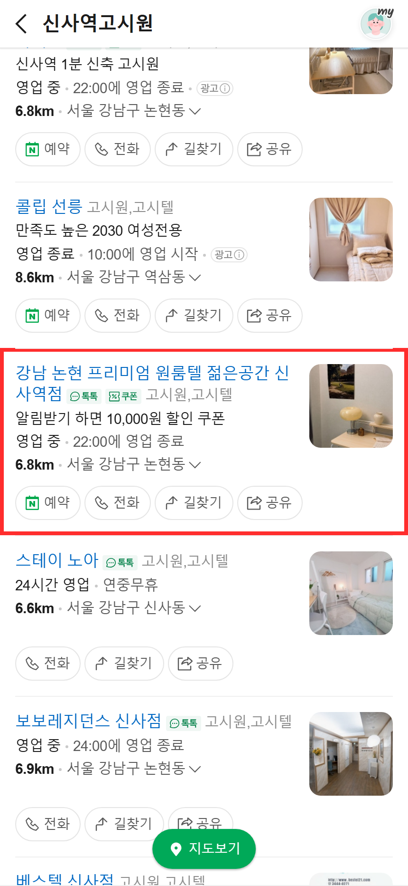
‘신사역고시원’ 검색 — 1위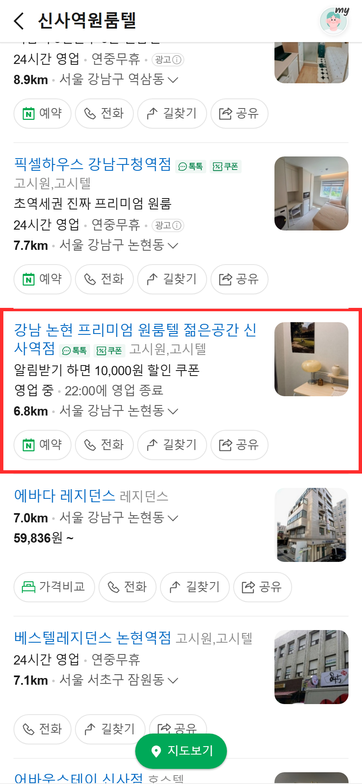
‘신사역원룸텔’ 검색 — 1위
블로그 노출
노출 9건
네이버 블로그탭 상위 30위 안에 우리 콘텐츠 9건이 노출되고 있습니다.
- ‘신사역고시원’ 1위 외 6건
- ‘압구정고시원’ 1위
- ‘신사역원룸텔’ 3위 외 8건
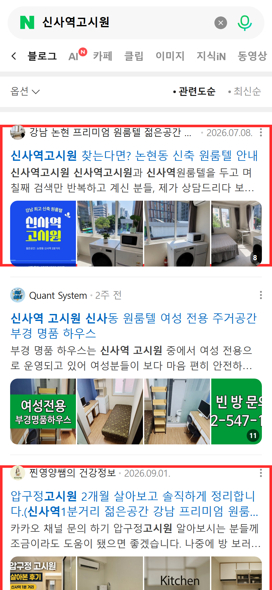
‘신사역고시원’ 검색 — 1위 외 6건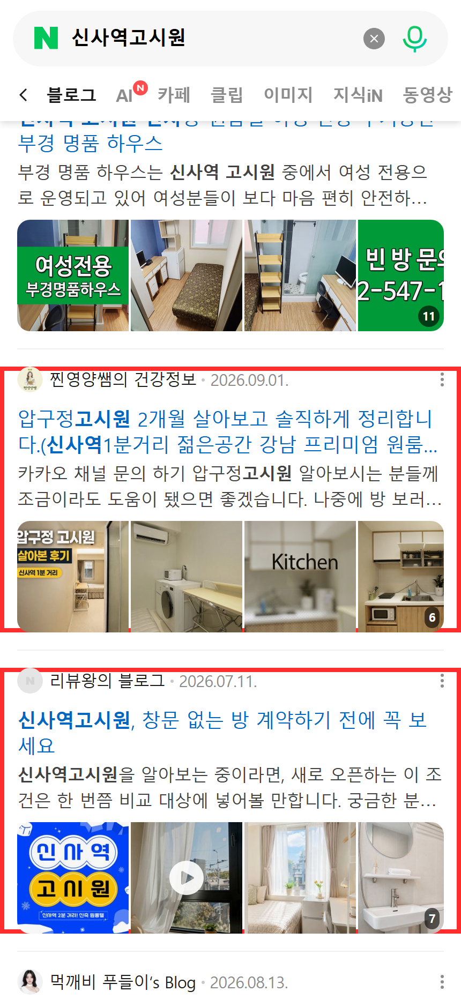
‘신사역고시원’ 검색 — 1위 외 6건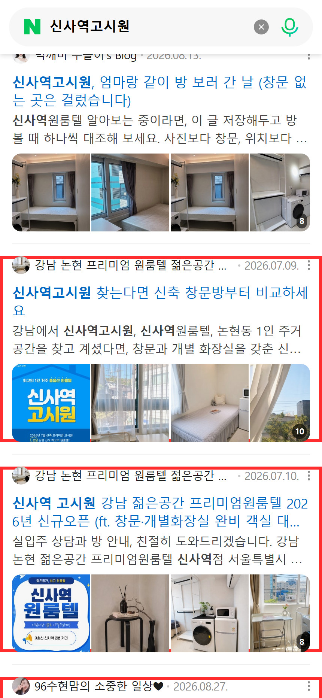
‘신사역고시원’ 검색 — 1위 외 6건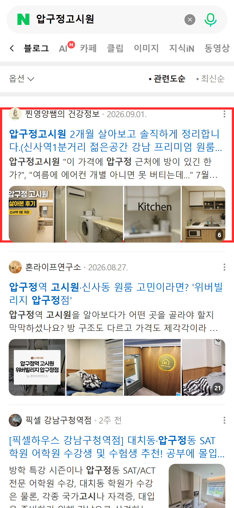
‘압구정고시원’ 검색 — 1위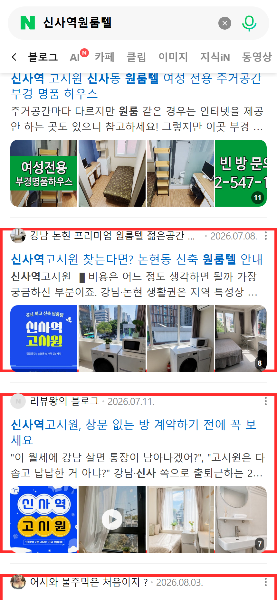
‘신사역원룸텔’ 검색 — 3위 외 8건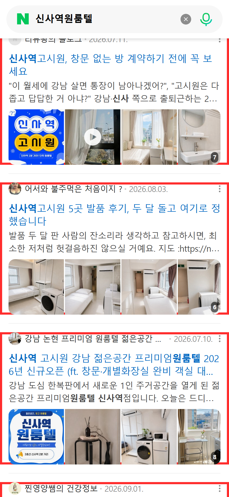
‘신사역원룸텔’ 검색 — 3위 외 8건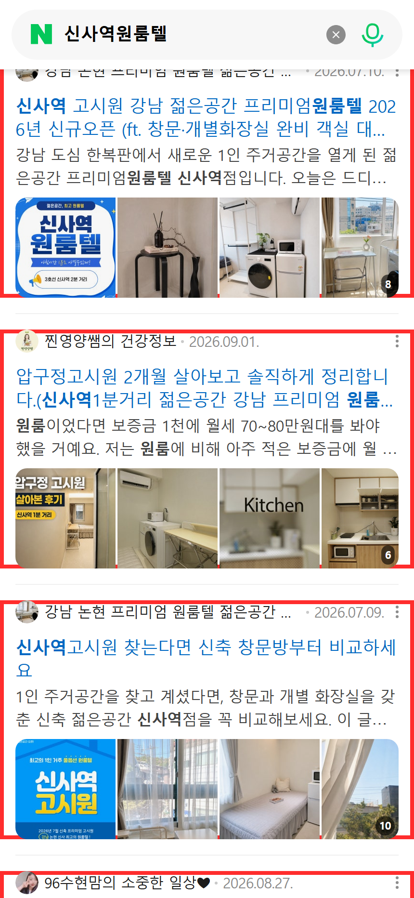
‘신사역원룸텔’ 검색 — 3위 외 8건
클립 노출
노출 4건
네이버 클립탭 상위 30위 안에 우리 콘텐츠 4건이 노출되고 있습니다.
- ‘신사역고시원’ 1위 외 3건
- ‘압구정고시원’ 1위 외 3건
- ‘신사역원룸텔’ 1위 외 3건
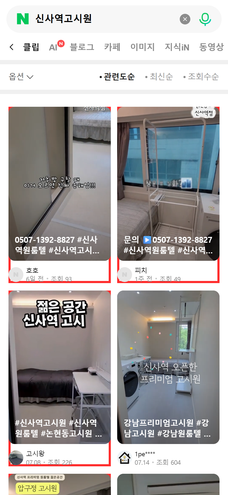
‘신사역고시원’ 검색 — 1위 외 3건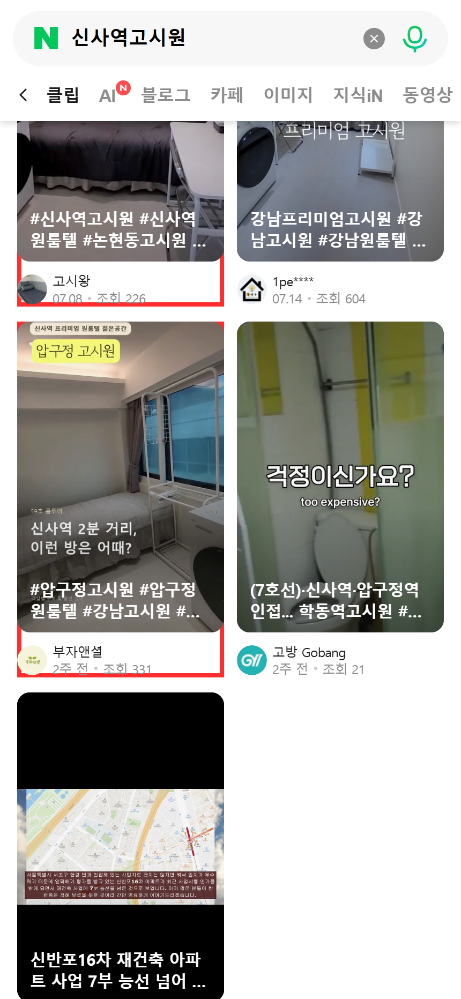
‘신사역고시원’ 검색 — 1위 외 3건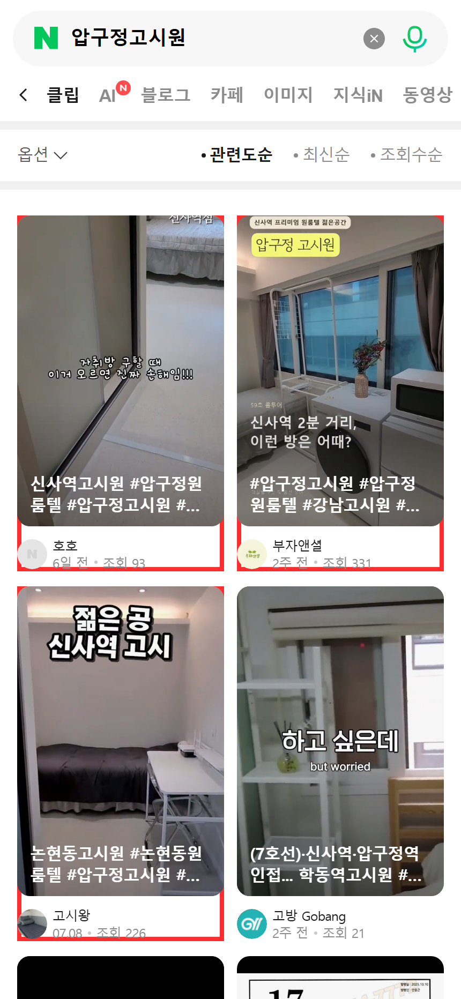
‘압구정고시원’ 검색 — 1위 외 3건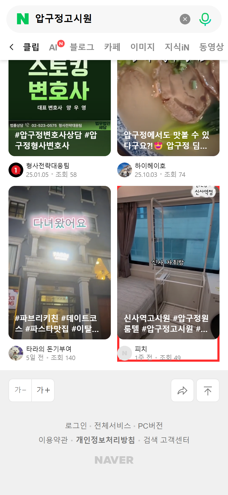
‘압구정고시원’ 검색 — 1위 외 3건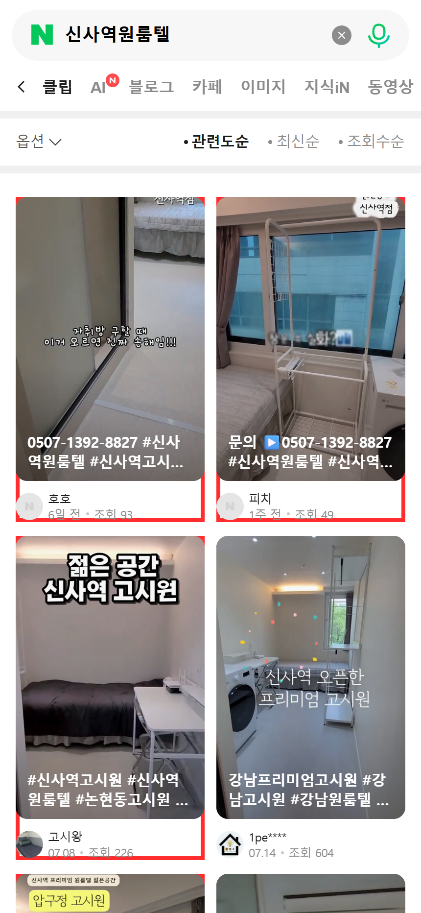
‘신사역원룸텔’ 검색 — 1위 외 3건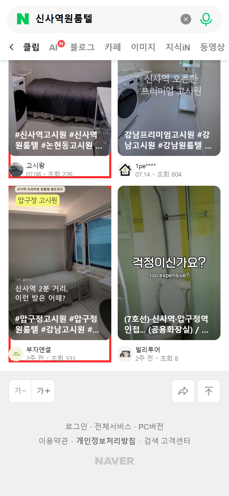
‘신사역원룸텔’ 검색 — 1위 외 3건
다음 달 계획
계획
예약리뷰 · 블로그리뷰 · 클립 · 소식 정기 진행, 키워드 순위 관리